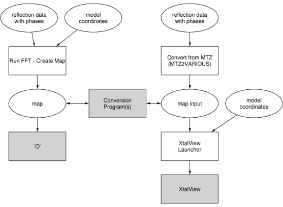

|
CCP4 Roadmaps |
| MODEL BUILDING |
MODEL BUILDING

Auxiliary CCP4 programs used in these tasks
- ARP/wARP
- Automated Refinement Procedure for refining protein structures
- ASTEXVIEWER
- Java program for display molecular structures and electron density maps
- BONES2PDB
- Make a PDB pseudo-coordinate file from a bones file
- FFFEAR
- Fast Fourier feature recognition for density fitting
- FFJOIN
- Joining model fragments from FFFear
- MAMA2CCP4
- Convert between 'mama' and Cambridge/CCP4 map formats
- MAP2FS
- Convert CCP4 map to XtalView fsfour format
- MAPDUMP
- Print a dump of sections of a map file
- MAPMASK
- Map/mask extend program
- MAPTONA4
- Convert binary map file to and from na4 ASCII format
- OMIT
- Calculate omit-maps according to Bhat procedure
- PEAKMAX
- Search for peaks in electron density map
- ROTAMER
- List amino acids whose side chain torsion angles deviate from the Penultimate Rotamer Library
- STEREO
- Extract coordinates from stereo diagrams
- XDLMAPMAN
- Manipulation, analysis and reformatting of electron density maps
Other non-CCP4 programs
- ARP/wARP Home Page
- Improvement and objective interpretation of maps, and automatic construction and refinement of macromolecular models
- MODELLER
- Homology protein structure modelling by satisfaction of spatial restraints; also part of
CCP4i
- HIC-Up
- Server for heterocompounds
Further reading
CCP4i Documentation on Map and Mask Utilities

CCP4i Documentation on Reflection Data Utilities
CCP4 Program Documentation